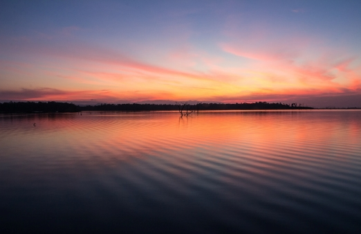
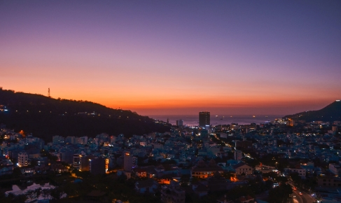
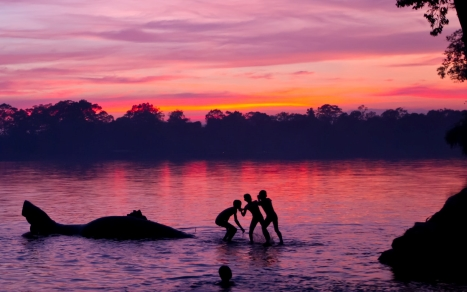

COMPARISON

The Mekong river and the Pearl river have a lot in common, they're both rivers in Asia, they flow through large urban deltas and much more. But they're also very different. For example the Mekong river has a long history of importance, while the Pearl river has only recently been as important and the amount of development in both urban delta's is very different, just to name a view.
These differences are all the result of different factors: humans, nature, geography, etc. This means that an already large number of differences which are interesting on their own, are still subject to change. Because humans, nature and the earth itself will always keep changing.
This page will be an in depth comparison of the Mekong river and the Pearl river and their respective deltas. The text will be there to give a general impression, while the datavisualisations will show a more precise picture.
FIVE MOST POPULATED CITIES IN BOTH URBAN DELTAS AND THEIR POPULATION DENSITY (PER KM²)
ECONOMIC COMPARISON
Both the Pearl river- and the Mekong river delta are of great economic importance for their respective countries. 
The primary source of money in the Mekong river delta is agriculture. We're talking about rice terraces, fishing, etc. This is very different to the Pearl river delta where the primary source is centered more around services and technology. Which is possible due to the amount of funding and foreign investment in the region.
The Pearl river delta is a lot more developed in it's economy than the Mekong river delta. 2 Trillion compared to 44 Billion. This is almost a 50:1 ratio difference.
This huge economic difference is something that the following table will further showcase.
ECONOMIC DIFFERENCE IN RELATION TO POPULATION AND SIZE
DIFFERENCES IN BIODIVERSITY

Biodiversity is of great importance to any river. For us humans, animals and the river itself. That's why it's necessary to look at rivers around the world and compare them.
This can be done in a large number of different ways, but the comparison that we are focusing on is making use of publicly available data and using them to compare our two rivers: the Mekong- and the Pearl river.
Within the topic of biodiversity, the focus of this comparison is on both aquatic biodiversity and biodiversity on land.
In specific: amphibians, freshwater fish, mammals and reptiles.
AMOUNT OF DIFFERENT AMPHIBIAN, FRESHWATER FISH, MAMMAL AND REPTILE SPECIES LIVING IN BOTH RIVERS
Footer Banner Section
FFOR THE LATEST NEWS & UPDATES